时间过得好快呀，距离我上一次写机器学习的笔记又过去大半个月了， 在这段时间里，机器学习的进度往前推进了一点点，因为当中花了挺多的时间在概率论和线性代数的学习上，以及另外分了点心研究Our Country In Data项目(可能是机器学习全部学习完毕之后重点开展的工作)，所以直到今天才开始着手将新的机器学习算法的知识记录下来。好啦，就不多啰嗦了，这次我们要学习的是两个新的机器学习算法，生成学习算法和朴素贝叶斯算法。
本文目录：
-生成学习算法
到目前为止，我们所知的机器学习算法都是基于给定特征值x的情况下对目标值y的条件概率分布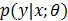建模，比如对逻辑回归算法目标值的条件概率分布建立的模型最终为评价函数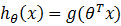，其中g是sigmod函数，接下来我们要一起学习的是另外一种类型的机器学习算法。
比如我们有这样的一个分类问题的需求，需要让机器学习如何区分大象(y=1)和小狗(y=0)。在给定一定的学习样本的情况下，我们之前所学的逻辑回归或感知器算法最终的目标都是找到一条边界来对样本进行划分，边界的一边为大象另一边为小狗，然后对于给定的新的输入值判断其目标值落在边界的哪一边，从而得到最终结果。现在我们采用另外一种思路，首先我们先观察训练样本中所有的大象，然后对大象所具有的特征进行建模，接着再观察小狗，对小狗所具有的特征进行建模，对于给定新的动物，我们可以将它和大象的模型进行匹配再和小狗的模型进行匹配看它更像哪一个，就可以最终作出判断。
诸如之前的直接学习p(y|x)的机器学习算法(比如逻辑回归算法)或是直接学习将输入域X映射到结果集{0,1}的机器学习算法(比如感知器算法)我们称之为判别学习算法。这里我们将要讨论的对p(x|y)和p(y)进行建模的算法我们称之为生成学习算法。比如我们用y来表示动物是大象(y=1)还是小狗(y=0)，那么p(x|y=1)的概率分布就是给大象的建立模型，而p(x|y=0)的概率分布就是给小狗建立的模型，进一步我们得到p(y)(称之为优先类别)之后，就可以根据贝叶斯公式来得到p(y|x)的值了。

在这里分母里的p(x)实际上等于p(x|y=1)p(y=1)+p(x|y=0)p(y=0)，我们假定只有一个输入特征(比如体型)来理解p(x)这个公式的话意思就是要求的是体型是大型动物的概率是多少？这个概率等于当它是大象是体型是大型的概率加上当它是小狗时体型是大型的概率，不是很明白的话可以多理解几次或是再研究一下另外一篇文章《概率论基础》，还是不理解也没有关系，因为我们接下来要做的事情和分母没有太大关系，此话怎讲？先看下面这个公式：
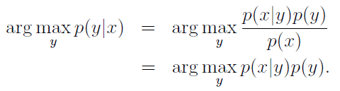
公式中argmax(f(x))的意思是使得f(x)最大时的x的取值，比如f(x)=-|x|+5，那么max(f(x))=5,当x=0时可以取到，那么我们就可以写成argmax(f(x))=0。那么对于这个公式的解释是，要得到一个y值使得p(y|x)最大，那么等同于求得一个y值使得p(x|y)p(y)最大。下面我们就要来学习第一个生成学习算法，我们称之为高斯判别分析法(GDA)，在开始介绍算法本身之前，我们先学习一下多元正态分布的知识。
–多元正态分布
之前我们在讲线性回归的概率解释时候，已经接触过了普通的正态分布，在概率论基础中也进一步的对正态分布进行了学习，在这里简单截取过来：
正态分布的标准定义是这样的：
若随机变量X服从一个位置参数为μ、尺度参数为σ的概率分布，且其概率密度函数为：
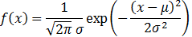
则这个随机变量就称为正态随机变量，正态随机变量服从的分布就称为正态分布，记作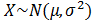
当μ=0，σ=1时，正态分布就成为标准正态分布：
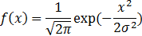
那么多元正态分布怎么理解呢？在多元正态分布里，参数μ是一个向量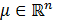:，而协方差我们用大写的Σ表示是一个矩阵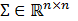:，而且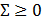且Σ 是对称半正定的(对于什么是正定半正定将在学习线性代数的文章里进行详细说明，在这里不影响接下来内容的学习)。于是我们可以得到多元正态分布的概率密度函数为：
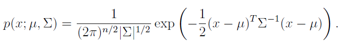
其中|Σ|指的是矩阵Σ的行列式。所以对于随机变量X，满足多元正态分布记作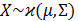，X的期望值为μ ，X的协方差Cov(X)=Σ。
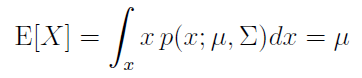
通过下面几个概率密度函数的图形我们来直观的感受一下多元正态分布：
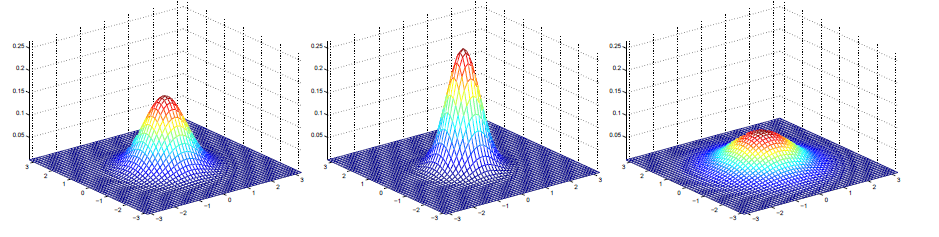
最左边这的图是标准正态分布的图形，其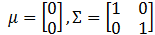，中间这个Σ=0.6I，即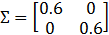，最后一个Σ=2I，即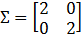。再看下面几个例子，我们改变Σ的值之后的图形：
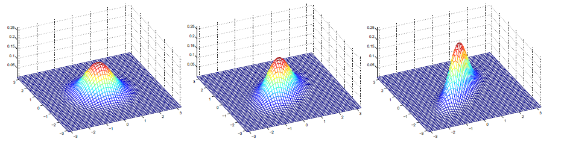
从左到右Σ的值依次为：
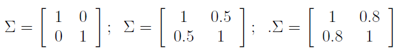
通过等高线的表示方式我们可以看得更直观：
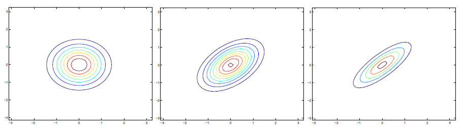
当我们改变Σ对角线上的值的时候，图形沿着45度角方向变得更为的扁平了。再看下面这几个例子：
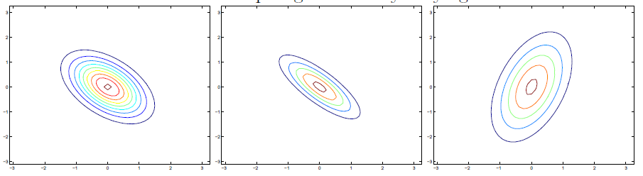
对应的Σ分别为：
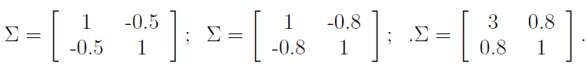
前两个图和上面的例子差不多，只是扁平化的方向正好相反，而最后一个例子，我们改变参数为3时，图形则变得更像一个椭圆。接着我们再来看一下Σ为单位矩阵I的情况下我们改变μ的值，图形会有什么样的变化：
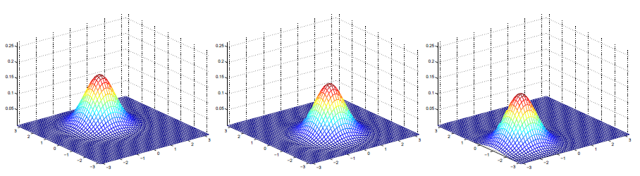
从左到右对应的μ分别为:
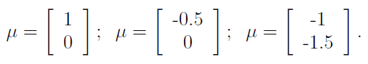
可见μ控制的是图形在坐标系中的位置，Σ控制的是图形的形状。
–高斯差别分析模型
当我们需要处理的分类问题的输入特征是连续型的随机值的时候，我们就可以采用高斯差别分析模型，基于多元正态分布对p(x|y)进行建模。其中y满足伯努利分布，x对于y=1和y=0时满足多元正态分布，这里对于两个不同的多元正态分布我们采用一个相同的协方差矩阵Σ：
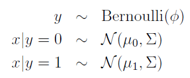
我们可以得出以下分布函数：
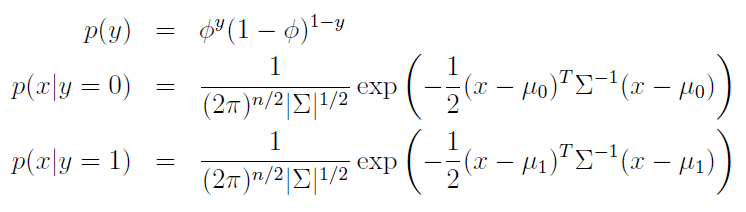
根据之前学习线性回归和逻辑回归的一样的步骤，我们需要得到一个对数似然函数，如下：
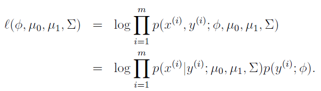
我们要做的同样是最大化这个对数似然函数，这里我们省去一系列的推导过程，直接给出下面的结果参数：
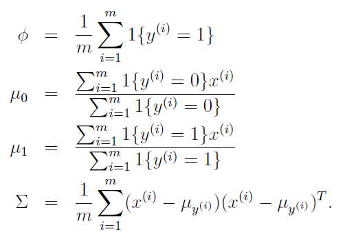
通过图形我们直观的看算法在做的是下面这样的事情：
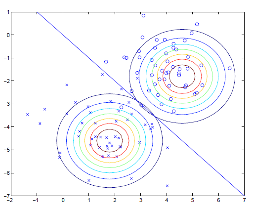
对于两种不同的样本，我们得到他们的正态分布，由于有相同的Σ，所以两个图片的形状是相同的，而由于μ不同，他们在坐标系中的位置就不同。而图中的直线给出的是p(y=1|x)=0.5的分界线，在线的一边y为1，在线的另一边y为0，虽然同样是得到一条分界线，但是这和逻辑回归得到的线是不一样的。
–GDA和逻辑回归
高斯判别分析和逻辑回归有着一定的联系。比如我们把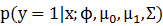看作是x的一个函数，我们可以得到类似下面的表达式：
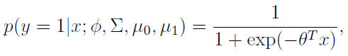
其中θ是由参数构成的函数，这个形式正好是逻辑回归中所用的估值函数的形式。那么我们在实际应用的时候是选择采用高斯判别分析还是采用逻辑回归呢？我们发现当我们假设p(x|y)是满足多元正态分布的时候，p(y|x)满足逻辑回归模型，反之并不成立。也就是说GDA给出的建模假设强于逻辑回归，即如果我们的假设p(x|y)满足多元正态分布是正确的，那么GDA算法将比逻辑回归更准确。另外我们也说逻辑回归的假设是比较粗暴的，因为如果我们的样本数据的输入特征是满足泊松分布或是有可能是其它分布的情况下，我们得到的p(y|x)也是满足逻辑回归的。总之，采用GDA需要的建模假设更强(假设了输入特征值是满足多元正态分布的)，假设正确的情况下少量的训练样本就可以训练出较好的GDA算法；而逻辑回归算法则作了比较弱的假设，而并不关心输入特征的概率分布，在有大量训练数据的情况下，逻辑回归算法则可以做的比GDA要好，基于这样的原因会发现逻辑回归算法比GDA算法更常用。
-朴素贝叶斯
在GDA算法中，我们的输入特征值是连续的，带有真实值的向量，下面我们将学习一个新的算法，输入的特征值x是离散的。我们将要采用的例子是垃圾邮件分类器，这个分类器的作用是区别收到的邮件是否为垃圾邮件。训练的样本来自自己手工设置近一段时间的邮件，给某些邮件打上垃圾邮件标记。类似这样将邮件分类的问题是一种更广泛问题的特例，这类问题叫作文本分类问题。
–朴素贝叶斯算法
现在我们手头上有了一些训练数据集合，也就是那些我们手工标记好的垃圾邮件和正常邮件。我们接下来要做的第一件事件就是将邮件表示成一个特征向量，这个向量的长度是我们预先设定的数据字典的长度，示意如下：
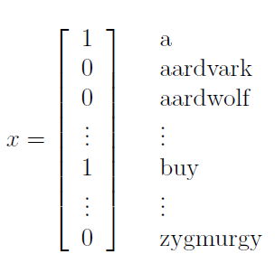
如果邮件中出现某个单词在字典中是第i个位置，那么我们就把这个向量的第i个位置设为1，如上图就可以直观的看出这封邮件中就出现了a和buy两个单词，而另外几个aardvark啥的就没有出现在邮件中。有了这样的特征向量，我们就可以开始给p(x|y)建模了。假设我们的字典里有50000个单词，那么如果我们采用多项式分布的方式建模的话，输出的情况有2的50000次方个可能性，则需要的参数至少有2的50000次方减1个，这显然太多了，计算的成本不可承受。
因此为了给p(x|y)建模，我们需要假设基于给定的y,x之间是相互独立的，什么意思呢？也就是说告诉你这是一封垃圾邮件，里面出到了单词buy，这并不影响其中出到单词a的概率。这样的假设显然不是完全正确的，基于任何语言的语法，有很多单词之间是有联系的，但是这样的假设在这里是可以接受的，因为我们在判断是否垃圾邮件的时候不需要去关心内在的这些单词之间是否有联系。类似这样的假设我们叫作朴素贝叶斯假设，采用这样的假设得到的算法我们作朴素贝叶斯分类算法。于是我们得到：
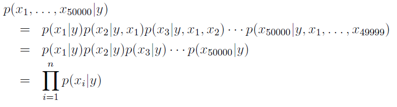
我们的模型有如下参数：
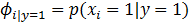
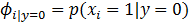
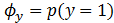
接着我们得到以下似然函数：
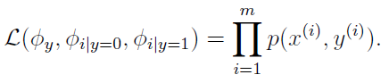
对这个函数进行最大似然估计可以得到以下参数的值：
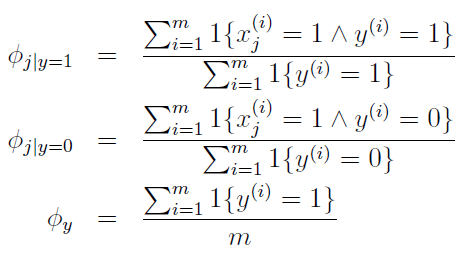
这些参数其实有非常直观的解释，比如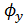，意思就是所有训练集合中垃圾邮件出现的概率，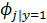意思就是垃圾邮件中第j个单词出现的概率。最后根据贝叶斯公式，给定一封新的邮件其是否为垃圾邮件的概率为：
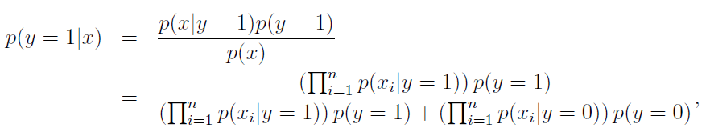
根据对比其是垃圾邮件和不是垃圾邮件的概率大小，即可作出判断。
在垃圾邮件分类这个例子中，我们的输入特征值x在每个位置上只有两种情况，非0即1，而实际上x也可以是多元的，比如x可以取{1,2,3…k}种情况，就算是对于原本连续的输入特征值，我们也可以手工的分类成离散的多个的值，比如以房间大小为例，我们可以作类似如下分类：
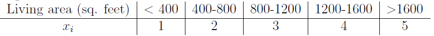
然后我们就可以用朴素贝叶斯算法对训练样本进行学习了，可见对于一些输入特征是连续的，但是采用多元正态分布并不是很好的匹配输入数据的时候，采用手工将输入特征离散化然后采用朴素贝叶斯算法也不失为一个好的选择。
–拉普拉斯平滑
在通常情况下，上面的朴素贝叶斯算法可以很好的处理很多的分类问题，但是我们可以稍加改进来让其工作的更好。我们先看看上面这样的算法会出现什么样的问题。假设有一个单词”nips”在我们的训练集合中从来没有出现过，在我们的数据字典里是第35000个单词，那么我们的朴素贝叶斯算法会得到以下参数：
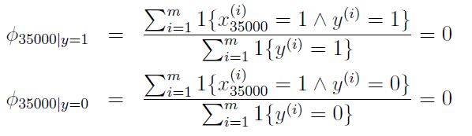
显然是正确的，因为这个单词在所有训练样本中都没有出现过，所以在垃圾邮件和正常邮件中出现的概率都是0。那么当计算一封含有”nips”的邮件是否为垃圾邮件是，我们会得到：
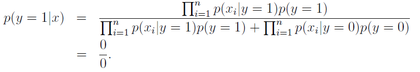
0除以0是不合法的或者说是未定义的。所以通俗的说，我们不能因为一个单词或者一个特征在训练集合中没有出现过我们就认为这样的情况出现的概率为0。比如某支球队在新赛季开始的五场比赛都是失败的，那么在预测第六场比赛的结果时我们不能认为其失败的概率是0。虽然根据我们之前算法中的定义，假设z可以取{0,1}={胜，负}个值，通过m个样本的训练，观察到z=0（胜）的概率为：
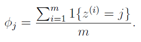
计算得到的结果的确为0，因为一场都没有赢过嘛。为了解决这样的问题，我们引入一个方法叫作拉普拉斯平滑，将上面这个公式稍加改进，为：
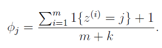
我们在分子上加1，在分母上加上特征所能取值的个数，这样子分子就永远不会是0了。那么我们处理垃圾邮件的例子中，参数就可以改进为：
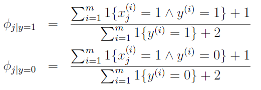
–文本分类的多项式事件模型
在结束生成学习算法的学习之前，我们最后再来学习一种文本分类算法，在处理文本分类的问题时，这个算法比朴素贝叶斯算法要更好一点。在这个算法中，我们首先改变输入特征向量x的定义，在之前的朴素贝叶斯算法中，x被定义为和数据字典一样长的一个二元向量，在这里我们定义x为一个和邮件内容一样长的多元向量，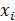表示的内容为邮件中第i个单词在数据字典中的位置，比如我们的数据字典有50000个单词，那么所能取的值就是{1,2,3….50000}。举例说明，比如有一个邮件是”A nips ……” 那么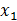=1(A为数据字典中第一个单词)，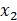=35000(nips为数据字典中第35000个单词)，这样的模型我们称之为多项式事件模型。这个模型的似然函数为：
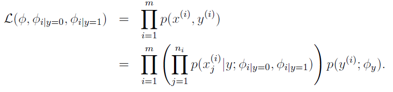
对似然函数求最大化后我们会得到如下参数：
其中m为训练样本的数量，n为第i个样本的邮件的长度。我们接着应用拉普拉斯平滑在分子加上1，在分母加上|V|（每个x所能取的值的可能性，在这里为数据字典的长度）后得到：
虽然相比这个算法朴素贝叶斯算法并不是最好的算法，但是它简单有效而且速度快，所以应用的范围也比较广。
总结
生成学习算法和朴素贝叶斯算法到这里就学习完了，当中省去了一些数学推导的过程而是直接给出了最后的公式和结果，实际应用中也的确不太需要清楚的了解算法每一个步骤的推导过程。自己目前也只是停留在机器学习的理论的阶段，这一阶段的主要目标是力求先弄清楚机器学习各种算法的思路，之前一阵学习速度缓慢是自己实在是有太多的数学知识都忘记了，导致很多公式都看不明白，所以才恶补了一点数学知识。接下来我会加快机器学习的学习进度，希望可以尽快的进入实际应用的阶段。按照网易公开课上的内容，接下来很简单的提了一下神经网络算法，然后就将大篇幅的深入介绍SVM-支持向量机的学习，因为在Andrew Ng上斯坦福的公开课的时候神经网络算法还是处于沉寂期，而现如今已经得到了进一步的发展，所以在最新的Coursera上的公开课就花了两周的时间来介绍神经网络算法。所以我接下来的一篇文章也是关于神经网络的，学习完神经网络之后再学习支持向量机。